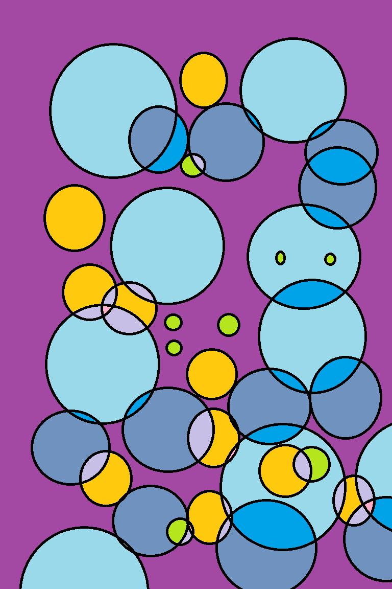

This is my THIRD web page for Web Mapping and my fourth lab at MSU Denver. Boom, boom.
I am a student at MSU Denver this semester working to get my GIS ccertificate! I find maps fascinating, and now that I have been working on creating them, I am even more enthralled! I am also a preschool teacher (which is stress central). I also have a big family and a dog and a cat. I am writing whatever comes into my mind because I get nervous talking about myself, but here we are. I shall now put some information into a list for you. These are three activites that I love.
For my next trick, I shall attempt... (drumroll please) a table of all the animes I need to watch. It will probably never be finished and I will definitely not add the entire thing since it is very long.
| Anime Name | Watch Status |
|---|---|
| Vinland Saga | Watched |
| Overlord | Unwatched |
| Attack on Titan | One more painful part left |
For my final tricks, I shall add a digital art piece I made when I was bored and a funny name generating website.
 the Benedict Cumberbatch Name GeneratorI have written more information about myself. Please, hold the applause. I hope I have provided more entertainment.